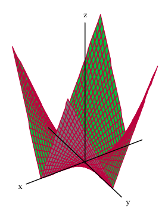
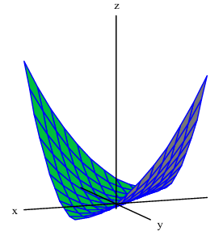
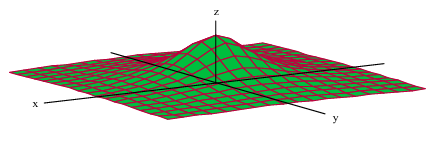
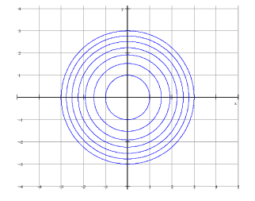
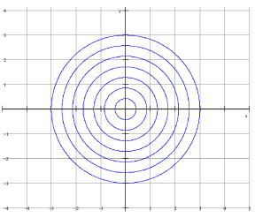

Homework Section 14.1
-
Question 1
The temperature-humidity index I gives the perceived air temperature as a function of the actual temperature T and the relative humidity h. So I can be written as `I = f(T, h)`. The following table represents I on a restricted domain.
Table 1: Temperature-Humidity Index (I) values based on Temperature and Humidity Actual Temp (°F) Relative Humidity (%) 20 30 40 50 60 70 80 77 78 79 81 82 83 85 82 84 86 88 90 93 90 87 90 93 96 100 106 95 93 96 101 107 114 124 100 99 104 110 120 132 144 -
What is the value of `f(85, 30)`? What does it mean?
-
For what value of T is `f(T, 50) = 107`?
-
What is the meaning of the function `f(T, 50)`?
-
Consider the function `f(85, h)`. What happens as the humidity increases?
-
-
Question 2
Consider the function `f(x, y) = ln(x^2 + 4y^2 - 16)`.
- Evaluate `f(3, -4)`
- Find and sketch the domain of the function.
- Find the range of the function.
-
Question 3
Find and sketch the domain of `f(x, y) = (xy)/(1 - x^2)`.
-
Question 4
Consider the function `f(x, y, z) = e^sqrt(z - x^2 - y^2)`.
- Evaluate `f(1, 2, 5)`
- Find and sketch the domain of the function.
- Find the range of the function.
-
Question 5
Sketch the graph of the function:
- `f(x, y) = x^2 + y^2/4`
- `f(x, y) = 6 - 2x - 3y`
- `f(x, y) = 2 sin x`
- `f(x, y) = sqrt(16 - 4x^2 - y^2)`
-
Question 6
Match each picture to one of the equations labeled I-IV.



I. `f(x, y) = (x - y)^2`
II. `f(x, y) = sin(x + y)`
III. `f(x, y) = |xy|`
IV. `f(x, y) = 1/(1 + x^2 + y^2)` -
Question 7
Draw a contour map of the function showing at least three level curves.
- `f(x, y) = y^2 - x^2`
- `f(x, y) = y + ln(x)`
-
Question 8
Which of the below set of level curves might represent an elliptic paraboloid? Justify your answer.


-
Question 9
Graph one level surface of `f(x, y, z) = x^2 + y^2 - z^2`. Assume `f(x, y, z) > 0`.